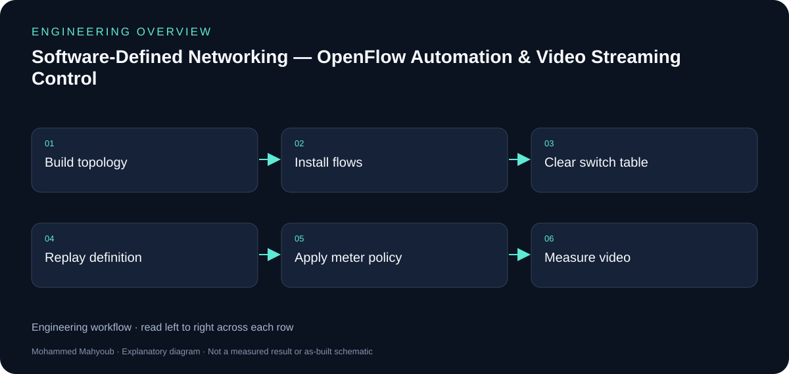
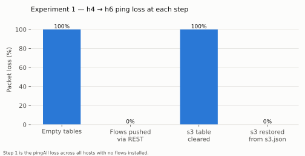
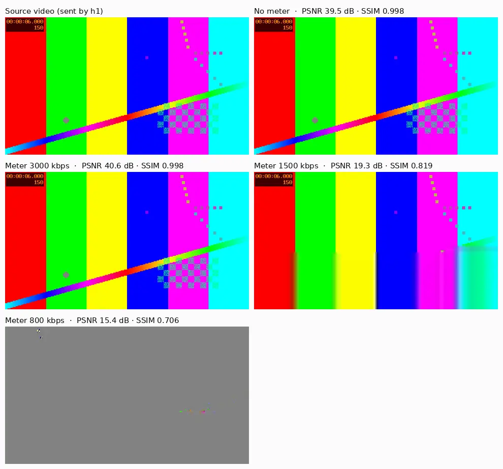
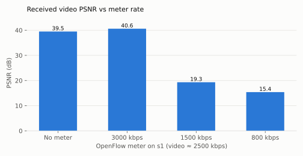
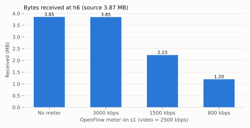
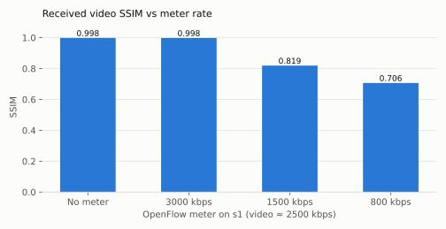

Software-Defined Networking · Network Automation
Software-Defined Networking — Automation & Video Streaming
Implemented an OpenDaylight/OpenFlow network with Mininet and real IP network integration, using controller APIs to automate forwarding and evaluate video streaming. A separate Ryu/Open vSwitch extension provides reproducible measurements.
Implemented Project
System overview

- Original
- OpenDaylight, Postman, XML forwarding rules, Python topologies, connectivity restoration and video streaming across Mininet and a real IP network.
- Author
- Mohammed Mahyoub
- Role
- End-to-end design, implementation, programming, testing and technical documentation.
- Automation
- Reproducible Ryu extension: Python REST client (and Postman collection) for the Ryu ofctl_rest API. Flow tables for three switches are computed from the topology and installed in 21 REST calls (0.038 s); after the s3 table is wiped, h4→h6 connectivity is restored in 7 calls (0.008 s).
- Streaming
- Reproducible Ryu extension: 2.5 Mbit/s H.264 stream from h1 to h6 across the three-switch path, rate-limited with OpenFlow 1.3 meters at 3000, 1500 and 800 kbit/s; quality measured with FFmpeg PSNR/SSIM.
- Ryu results
- Reproducible Ryu extension: No meter / 3000 kbit/s: PSNR ≈ 40 dB, SSIM 0.998. 1500 kbit/s: 19.3 dB, SSIM 0.819. 800 kbit/s: 15.4 dB, SSIM 0.706. All logs, flow dumps and raw results are in the repository.
Engineering rationale
Original implementation and reproducible extension
The original implementation used OpenDaylight, OpenFlow, Mininet, Postman and XML forwarding rules, with real IP network integration. The Ryu/Open vSwitch repository is a separate reproducible extension. The PSNR, SSIM and REST timing figures below belong to that extension.
Original and reproducible implementations
The LinkedIn project describes an OpenDaylight implementation using XML-defined rules, Mininet and a connection to a real IP network. This repository documents a reproducible Ryu implementation using ofctl_rest, Open vSwitch and OpenFlow 1.3. The controller names and API formats must remain attached to their respective implementations.
Control plane versus data plane
Python or Postman sends configuration requests to the controller. OpenFlow rules and meters then govern forwarding inside the switches. Video packets travel through the switch path; they do not pass through the REST client.
Evidence behind the results
The committed results and logs describe 21 REST calls for initial installation, seven calls for s3 restoration, and four video-meter conditions. The chart values belong to those recorded runs. REST request duration is not an independently measured end-to-end service recovery time.
Interpretation
An OpenFlow DROP meter above the stream bitrate produces little impairment; lower rates discard packets and reduce received PSNR and SSIM. This is policing behaviour, not adaptive video encoding or guaranteed quality for arbitrary networks.

Evidence and validation
Review the documented implementation against these validation topics; measured results are shown only where provided by the source.
- Switch connections and installed flow tables
- Connectivity before/after clearing s3
- REST log and replayed definition
- Meter counters and aligned video-quality results
Source gallery
Figures from the existing project repository, public notebook outputs, or corresponding LinkedIn project media. Original screenshots and existing explanatory figures retain their source context.









